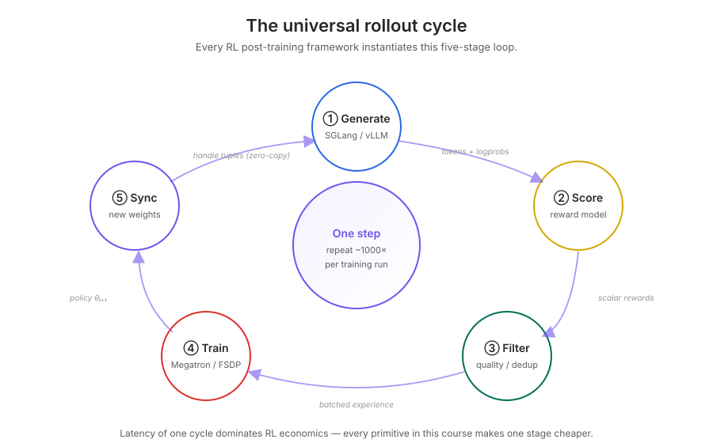
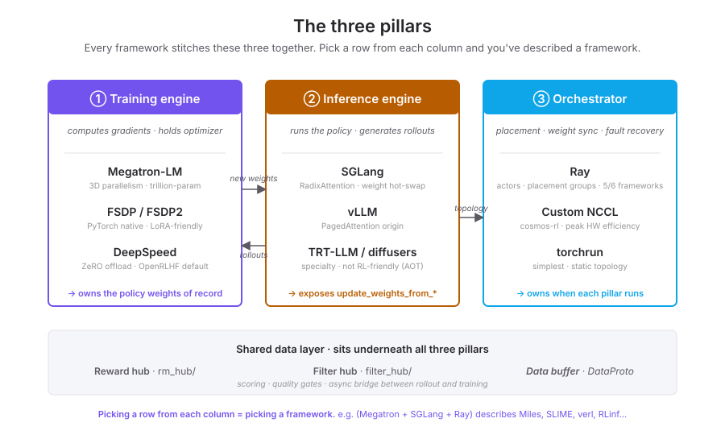
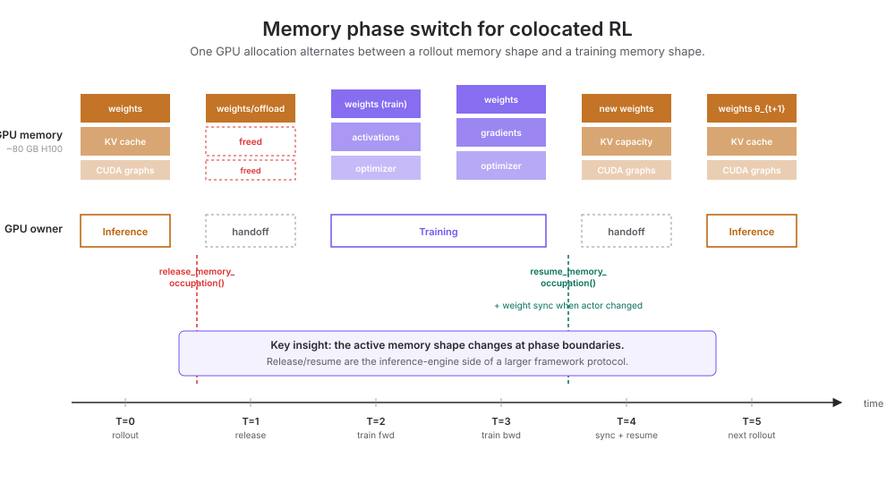
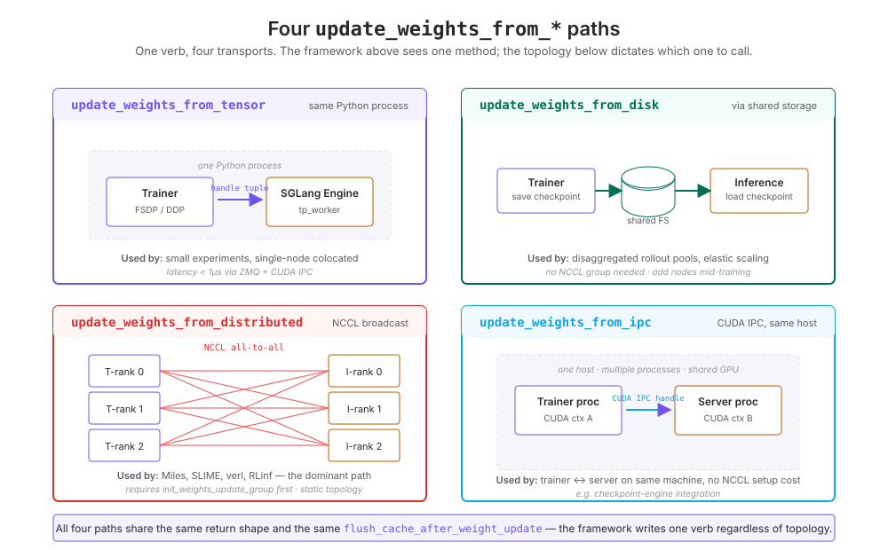
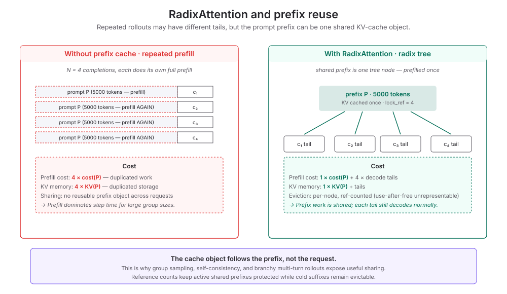
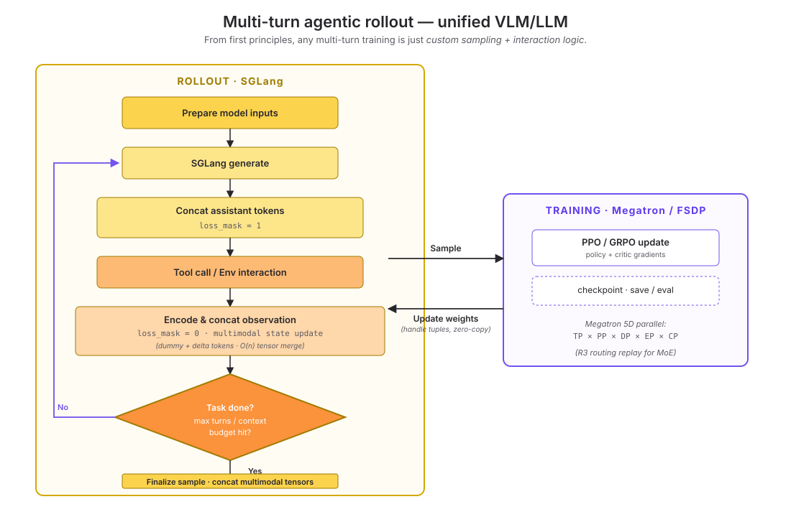
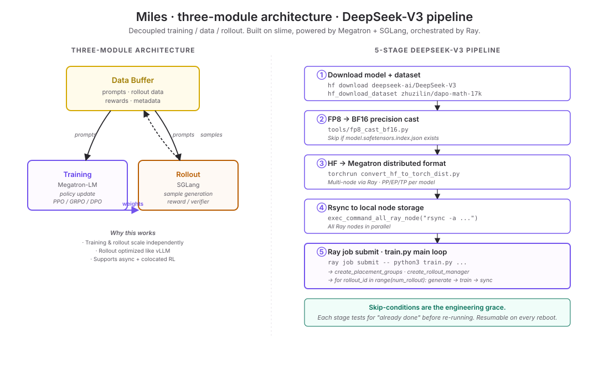
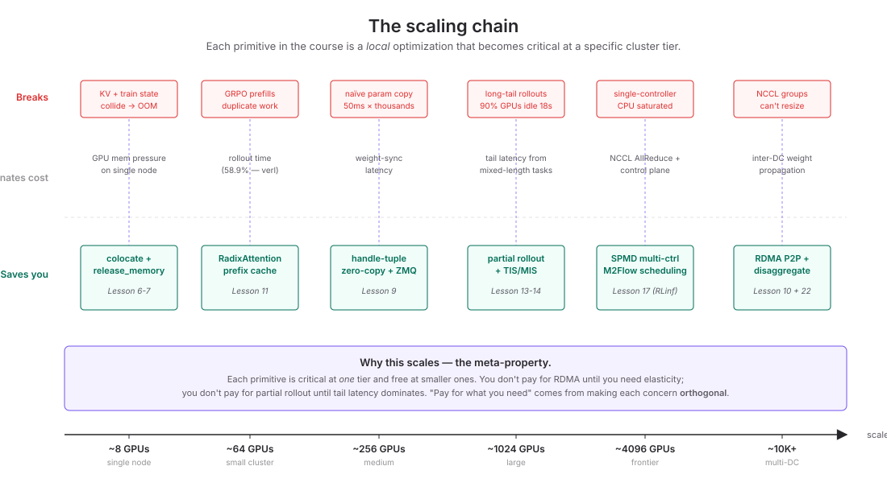

RL Infrastructure for the Mathematically Inclined
A field survey of reinforcement-learning post-training systems — six engineering primitives, three kernel-level DSLs, the training backbone, the quantization problem, and the nine production frameworks you'd actually use. Aimed at mathematicians and RL theorists who want to read the source code of verl, SGLang, Megatron-LM, Triton and recognize what's mathematically interesting about the engineering choices.
Why this matters to a theorist
If you're a mathematician thinking about reinforcement learning, you might assume infrastructure is "the boring part that runs your algorithm." This survey argues otherwise. The engineering choices in modern RL post-training systems encode mathematical decisions — which approximations are bounded, which biases are corrected, which invariants hold by construction. You can't read DeepSeek-R1's training story without knowing how Miles' routing-replay makes it numerically possible; you can't compare on-policy and off-policy results without understanding how AReaL's asynchronous broadcasts shift the bias term in your gradient estimator.
The engineering is, in many cases, the assumption set that your theorem is implicitly invoking. A claim about GRPO's variance reduction holds only as long as the prefix cache, the importance-sampling correction, and the memory-handoff contract all behave as advertised. When they don't, the loss curve still looks fine and the eval curve mysteriously degrades — the field has paid years of debugging in this exact pattern.
This survey covers what is mathematically interesting about the engineering. I won't try to teach you the algorithms; the field has good papers and reading lists for that. I'll try instead to give you the structural picture: the five-stage cycle every framework instantiates, the three pillars they all stitch together, the six primitives that resolve the central tension, and the three kernel-level DSLs that make any of it run at a competitive speed. Where the engineering encodes a mathematical fact — an invariant, a composition rule, a bias correction — I'll flag it.
A large number of RL conclusions derived from papers are based on RL infrastructure that may be extremely flawed. — paraphrasing Chenyang Zhao, whose Awesome-ML-SYS-Tutorial is the most-cited source in this survey
The mathematician's instinct here is the right one: if you can't verify the infrastructure, treat the results as conjecture. The good news is that the infrastructure is open source, and the patterns are surprisingly elegant once you have a vocabulary. The aim of this survey is to give you the vocabulary.
The skeleton: a five-stage cycle on three pillars
Every framework you'll encounter — Miles, SLIME, verl, SkyRL, RLinf, cosmos-rl, AReaL, OpenRLHF, even SGLang's own RL adopters — instantiates the same skeleton. One step of RL training is a five-stage loop: the model generates completions, those are scored by a reward function, low-quality ones are filtered, the survivors train the policy, and the new policy is synced back to the inference engine. Repeat.

Around this cycle live three components: a training engine that computes gradients and holds the optimizer; an inference engine that runs the policy to generate rollouts; and an orchestrator that coordinates them across GPUs and nodes. A framework is, to a first approximation, a particular choice for each of these three slots — plus a data layer (reward hub, filter hub, data buffer) and an algorithm layer (GRPO, PPO, DAPO, OPD) that sit underneath.

The genius of the modern stack is that these three pillars are pluggable, with stable interfaces between them. The framework code looks single-threaded but runs SPMD across hundreds of GPUs. The driver writes engine.update_weights_from_distributed(...) and never sees the NCCL topology underneath. This decoupling is what makes a framework a framework and not a one-off training script.
The central tension: two halves that fight
Pretraining an LLM is a static dataset plus a training loop. Inference is a model plus a request stream. Both are well-understood; the right tools are Megatron-LM and vLLM (or SGLang) respectively. RL post-training is both at once, and the two halves want opposite things from the same hardware.
| Concern | Training prefers | Rollout prefers |
|---|---|---|
| Parallelism | High TP / PP — split the model | High DP — split the batch |
| Memory | Optimizer states + gradients + activations | Weights + KV cache + CUDA graphs |
| Throughput unit | Tokens/step (compute-bound) | Trajectories/sec (memory-bound) |
| Goal | Update one global policy | Generate N independent samples |
If you give half your fleet to training and half to inference and let them run in parallel, the on-policy constraint forces them to alternate anyway — half the fleet is always idle. If you force identical parallelism on both, one side bottlenecks. If you give them different parallelism, every phase transition requires resharding the model. Every engineering primitive that follows is a way out of this trap.
This is, mathematically, a resource-conflict problem with a Pareto frontier. The pragmatic solution — colocate both halves on the same GPUs and serialize them in time — turns the conflict into a sequencing problem. That sequencing problem is what the next six sections solve.
Six engineering primitives worth knowing
Each subsection covers one primitive. For each: the invariant it preserves, the implementation, and what's mathematically interesting about it.
① The hybrid engine — 训推一体
The answer to the opposing-preferences problem is a pattern called 训推一体 ("integrated train-inference"), formalized in verl's HybridFlow paper. Put both halves on the same GPUs; run them serially; swap memory between phases.
Mathematically, this is mutual exclusion: at any moment the GPU is in exactly one of two states (training-mode or inference-mode), and a controlled transition between them happens once per cycle. The cost is the transition itself. The benefit is that every GPU is doing useful work at all times — peak utilization moves from 45-55% (disaggregated) to 85-90% (colocated). Every modern framework — Miles, SLIME, verl, SkyRL, RLinf, cosmos-rl — uses some form of this pattern. The disagreement is on how to make the transition cheap.
Up to about 64 GPUs, full colocation (all roles share one resource pool) wins. Above that, split colocation (actor+ref on one pool, critic+reward on another) wins, because the parallelism preferences of the four roles start to diverge. Pure disaggregation only becomes economic above ~1024 GPUs, when rollout volume can amortize a separate inference cluster.
② Memory choreography
The hybrid engine works because two functions encode the entire concurrency contract: release_memory_occupation and resume_memory_occupation. They pause the inference engine, hand the GPU to the trainer, then restore it. The implementation is granular — three independent memory pools (KV cache, weights, CUDA graphs) can be released independently.

Here's the actual implementation in SGLang. The mathematical interest is in the assert is_fully_idle() at the top: the function literally cannot run if any request is in flight. The concurrency contract is checked structurally, not by convention. Each if tag in tags branch is a separate pool with its own pause semantics — granularity is the point.
def release_memory_occupation(self, recv_req):
assert self.is_fully_idle(), \
"release_memory_occupation should be called only when server is idle."
tags = recv_req.tags or GPU_MEMORY_ALL_TYPES
for tag in tags:
self.offload_tags.add(tag)
if GPU_MEMORY_TYPE_KV_CACHE in tags:
self.memory_saver_adapter.pause(GPU_MEMORY_TYPE_KV_CACHE)
self.flush_cache()
if GPU_MEMORY_TYPE_WEIGHTS in tags:
self.stashed_model_static_state = _export_static_state(
self.tp_worker.model_runner.model
)
torch.distributed.barrier(self.tp_cpu_group)
self.memory_saver_adapter.pause(GPU_MEMORY_TYPE_WEIGHTS)
if GPU_MEMORY_TYPE_CUDA_GRAPH in tags:
self.memory_saver_adapter.pause(GPU_MEMORY_TYPE_CUDA_GRAPH)
torch.get_device_module().synchronize()
return ReleaseMemoryOccupationReqOutput()③ Zero-copy weight synchronization
After each training step the trainer has a new policy θt+1; the inference engine still has θt. Naively, you serialize the new weights, send them, deserialize. On a 70B model that's tens of milliseconds per parameter, with thousands of parameters per layer — minutes per training step, untenable.
The trick is to never move the tensor data. The trainer process has the new weights in GPU memory; the inference process is either on the same host or shares a NCCL group with the trainer. The trainer sends only a handle tuple — pointer, stride, offset, CUDA IPC descriptor — under a kilobyte. The inference process reconstructs a Python tensor object that points to the same physical GPU memory.
What's mathematically interesting here is that the abstraction is functorial: a Python Tensor is a thin wrapper around an underlying memory descriptor, and reconstructing the wrapper is independent of moving the bytes. The trainer and inference engine end up with two different objects denoting the same memory. The synchronization cost goes from O(parameters × byte_throughput) to O(parameters × pointer_size). Sub-millisecond instead of minutes.
④ Four update_weights_from_* paths, one verb
The trainer might hold the new weights in any of four physical configurations: same process as the inference engine, on a shared disk, on remote NCCL ranks, or in a sibling CUDA-IPC process. SGLang exposes four implementations behind one verb. The framework above writes engine.update_weights_from_*(...); the topology underneath dictates which method.

The pattern is functor-like: the same operation lifted to different categories of topology. What matters mathematically is that all four methods share flush_cache_after_weight_update. The RadixCache (next subsection) must be invalidated because old prefix entries reference the old policy — keeping them would mean the inference engine is serving generations based on a model that no longer exists. Cache invalidation is the inherent consistency obligation; the four transports differ in how they get the bytes to the inference engine, but they all owe the same invariant downstream.
class SchedulerUpdateWeightsMixin:
def update_weights_from_disk(self, recv_req):
success, message = self.tp_worker.update_weights_from_disk(recv_req)
if success and self.draft_worker is not None:
success, message = self.draft_worker.update_weights_from_disk(recv_req)
if success:
self.flush_cache_after_weight_update(recv_req)
return UpdateWeightFromDiskReqOutput(success, message, 0)
def update_weights_from_distributed(self, recv_req):
success, message = self.tp_worker.update_weights_from_distributed(recv_req)
if success:
self.flush_cache_after_weight_update(recv_req)
return UpdateWeightsFromDistributedReqOutput(success, message)
def update_weights_from_tensor(self, recv_req):
worker = self.draft_worker or self.tp_worker
success, message = worker.update_weights_from_tensor(recv_req)
if success:
self.flush_cache_after_weight_update(recv_req)
torch.distributed.barrier(group=self.tp_cpu_group)
return UpdateWeightsFromTensorReqOutput(success, message)
def update_weights_from_ipc(self, recv_req):
success, message = self.tp_worker.update_weights_from_ipc(recv_req)
if success and self.draft_worker is not None:
success, message = self.draft_worker.update_weights_from_ipc(recv_req)
if success:
self.flush_cache_after_weight_update(recv_req)
torch.distributed.barrier(group=self.tp_cpu_group)
return UpdateWeightsFromIPCReqOutput(success, message)An underrated systems constraint that this verb hides: NCCL process groups are static. Their participant set is fixed at creation; adding a new inference node mid-training means destroying and recreating the group. RDMA's point-to-point model treats each connection independently — a new peer establishes a fresh Queue Pair without disturbing existing links. This single fact explains why colocated frameworks lean on NCCL (via init_weights_update_group) while disaggregated systems prefer RDMA or shared disk. Elasticity is incompatible with NCCL.
⑤ RadixAttention × GRPO — algebraic composition
This is the example I would lead with if I were trying to convince a mathematician that engineering can be beautiful. GRPO generates N completions per prompt and normalizes rewards within the group as a baseline; the algorithmic motivation is variance reduction. The system-level consequence is that all N completions share the prompt prefix.
RadixAttention exploits this. The shared prefix is a single node in a radix tree; each completion branches off as a child. Reference counting (inc_lock_ref / dec_lock_ref) means a node with lock_ref > 0 cannot be evicted. Use-after-free is structurally unrepresentable.

class RadixCache(BasePrefixCache, KVCacheEventMixin):
def match_prefix(self, params: MatchPrefixParams) -> MatchResult: ...
def insert(self, params: InsertParams) -> InsertResult: ...
def inc_lock_ref(self, node: TreeNode) -> IncLockRefResult: ...
def dec_lock_ref(self, ...) -> DecLockRefResult: ...
def evict(self, params: EvictParams) -> EvictResult: ...
@property
def evictable_size(self): ...Neither was designed for the other. GRPO chose group sampling for variance reduction. RadixAttention chose a tree for cache reuse. Their composition multiplies savings — and reference counting means cache lifetime is automatic.
This kind of accidental-but-elegant composition recurs throughout the field. A mathematician will recognize the structure: the algorithm exposes a sharing pattern (here, a common prefix); the data structure exposes a sharing mechanism (here, a radix tree); their composition is the categorical product. The right notation makes the saving obvious — the wrong notation makes the saving impossible to express.
⑥ Async training and the staleness tradeoff
Strict on-policy RL says: wait for every trajectory to finish under policy θt before running the gradient step. In practice this is fatal at scale. If 10% of prompts produce long-context trajectories (2K tokens of decode) and 90% are short (512 tokens), the short ones finish in ~2s but the long ones take ~20s. 90% of GPUs idle for 18s every iteration. Over 1000 iterations: ~5 GPU-hours per GPU wasted.
The pragmatic solution is partial rollout: train on the 128 trajectories that finished, let the rest continue under (now stale) θt. Throughput rises 2–4×; the off-policy ratio rises with it. There are two paths to bounding the resulting bias.
Mathematical correction. Miles applies Truncated Importance Sampling (TIS) and Masked Importance Sampling (MIS): the gradient update of a sample generated under θt-k is reweighted by the importance ratio πθt(a|s) / πθt-k(a|s), with truncation or masking to control variance. The estimator becomes unbiased again at the cost of variance the truncation introduces — a classical Radon-Nikodym story.
Operational correction. Kimi K1.5 bounds staleness instead: context-length checkpointing, dynamic batch reordering, prefix-maximizing scheduling. The off-policy ratio never grows large enough to require explicit correction, but the bound is enforced operationally rather than mathematically.
The architectural extreme is AReaL's fully-async design: NCCL broadcasts are launched with async_op=True, bucketed by memory budget. The trainer never blocks on weight sync. The off-policy bias is whatever falls out of how long inference takes to catch up — call it "implicit staleness." AReaL bets that with the right bucketing, the implicit staleness stays small enough to skip explicit corrections. They claim 2.77× speedup over synchronous baselines.
The layer beneath: CUDA, Triton, and TileLang
So far the survey has stayed at the framework level. But the throughput of all the primitives above depends on the speed of the underlying kernels — attention, GEMM, normalization, softmax. A 2× speedup on an attention kernel is a 2× speedup on rollout, which is 2× on the whole RL loop. Below PyTorch, there is a hierarchy of languages for writing GPU kernels. Theorists tend to underestimate how much of the field's progress lives at this layer.
CUDA Python — the bottom of the stack
NVIDIA/cuda-python is the metapackage that exposes CUDA from Python. It has multiple subpackages: cuda.bindings (low-level bindings to the CUDA driver, runtime, NVRTC, NVVM), cuda.core (Pythonic access to CUDA Runtime and JIT compilation), numba.cuda (a SIMT DSL that compiles a restricted subset of Python to CUDA kernels), and newer DSLs cuda.tile (NumPy-like syntax for the CUDA Tile programming model) and cuda.coop (block-wide and warp-wide primitives). If you need to write a kernel from scratch in Python with full control, this is the layer.
The reason this exists, beyond pedagogy, is that PyTorch's abstractions occasionally aren't enough. When you need NVSHMEM for one-sided RDMA, or NVML for fine-grained device queries, or a custom reduction over a non-standard layout, you reach for cuda.bindings. For RL infra specifically, NCCL group management and CUDA IPC (Section ③) live here.
Triton — the Python DSL that became universal
Triton is the Python DSL for writing GPU kernels that became the de facto standard the moment FlashAttention shipped in it. The pitch from the original MAPL 2019 paper is simple: write code that's higher-productivity than CUDA but more flexible than fixed-shape DSLs, with autotuning across block sizes. The compiler handles memory coalescing, shared-memory allocation, and tensor-core dispatch.
python/tutorials/01-vector-add.py@triton.jit
def add_kernel(x_ptr, # *Pointer* to first input vector.
y_ptr, # *Pointer* to second input vector.
output_ptr, # *Pointer* to output vector.
n_elements,
BLOCK_SIZE: tl.constexpr):
pid = tl.program_id(axis=0)
block_start = pid * BLOCK_SIZE
offsets = block_start + tl.arange(0, BLOCK_SIZE)
mask = offsets < n_elements
x = tl.load(x_ptr + offsets, mask=mask)
y = tl.load(y_ptr + offsets, mask=mask)
tl.add(x_ptr + offsets, y, mask=mask)What's worth noticing: the indexing is at the block level, not the thread level. tl.arange(0, BLOCK_SIZE) denotes a whole block of indices; mask handles out-of-bounds without manual loops. This is the "tiled" model — write block-wise math, the compiler vectorizes within the block. vLLM's PagedAttention, SGLang's attention kernels, the FlashAttention family, and most of the actually-fast layers in production frameworks are Triton kernels.
TileLang — the new DSL with theorem-prover integration
TileLang (open-sourced Jan 2025) is a newer Python DSL on top of TVM. Its pitch is similar to Triton's — productivity above CUDA, flexibility above fixed DSLs — but the design choices differ. TileLang exposes more explicit memory tier control (shared, fragment, register) and integrates the Z3 theorem prover into TVM's arith analyzer for SMT-based symbolic reasoning and automatic correctness verification. Backends include NVIDIA via CUTLASS CuTe DSL, AMD MI300X (with async copy), Apple Metal, Huawei AscendC, and WebGPU.
examples/deepseek_mla/example_mla_decode.py@tilelang.jit(out_idx=[4], pass_configs={...})
def flashattn(batch, heads, kv_head_num, seqlen_kv, dim, pe_dim, ...):
@T.prim_func
def main_split(Q, Q_pe, KV, K_pe, Output):
with T.Kernel(batch, heads // min(block_H, kv_group_num), num_split, threads=256) as (bid, hid, bz):
Q_shared = T.alloc_shared([block_H, dim], dtype)
S_shared = T.alloc_shared([block_H, block_N], dtype)
KV_shared = T.alloc_shared([block_N, dim], dtype)
acc_s = T.alloc_fragment([block_H, block_N], accum_dtype)
acc_o = T.alloc_fragment([block_H, dim], accum_dtype)
scores_max = T.alloc_fragment([block_H], accum_dtype)
logsum = T.alloc_fragment([block_H], accum_dtype)
# ... ~50 lines of tiled FlashAttention math ...The TileLang authors claim performance parity with hand-written FlashMLA on H100 in 80 lines of Python. The Z3 integration is the unusual choice — it lets the compiler prove arithmetic invariants symbolically (e.g., that an index expression stays in bounds for all parameter values, that a tiling is a valid partition). For a mathematician, this is the most interesting compiler design move in the GPU DSL space.
Which one to learn?
If you only learn one, learn Triton — it's where the field's research code lives. If you care about correctness verification or AMD/Apple/Huawei portability, look at TileLang. Reach for raw cuda.bindings only when you need a CUDA capability the DSLs don't expose (NVSHMEM, certain NCCL primitives, CUDA IPC manipulation). The framework-level RL code (Section ③) lives entirely in pure PyTorch + cuda-python bindings; the inference engines underneath (SGLang, vLLM) are where Triton kernels do the heavy lifting.
- triton-lang.org — tutorials (vector add, fused softmax, matmul, FlashAttention)
- srush/Triton-Puzzles — Sasha Rush's puzzles, runnable without a GPU
- tile-ai/tilelang-puzzles — 10 progressively harder puzzles for TileLang
- tilelang/examples/deepseek_mla — MLA decode reference implementation
- cuda.core docs · cuda.tile docs
The training backbone: Megatron-LM
Megatron-LM is the training engine sitting under almost every RL framework in this survey. The repository contains two parts: Megatron Core (a composable library of GPU-optimized building blocks — kernels, parallelism strategies, mixed-precision support) and Megatron-LM proper (reference training scripts using the core). Performance numbers from NVIDIA's benchmarks: 462B-parameter models trained on 6144 H100 GPUs, reaching 47% Model FLOP Utilization. For comparison, naïve PyTorch DDP on a 70B model typically achieves 30-35% MFU.
Five-dimensional parallelism
The reason Megatron exists, and the reason every serious LLM training run uses it, is its parallelism. Modern Megatron supports five orthogonal dimensions:
- TP (Tensor Parallel) — split each layer's weight matrices across GPUs. Within-machine, NVLink-bound. Default for the highest-bandwidth domain.
- PP (Pipeline Parallel) — split layers across GPUs. Cross-machine, InfiniBand-bound. Sparse communication, tolerates slower links.
- DP (Data Parallel) — replicate the model, split the batch. Tolerant of slow communication. Outer loop of the parallelism nest.
- EP (Expert Parallel) — split MoE experts across GPUs. Necessary above ~30B-parameter MoE models. Required for DeepSeek-V3, Qwen3-MoE, GPT-OSS.
- CP (Context Parallel) — split the sequence dimension across GPUs. Needed for long-context training (32K+ tokens) and for video models (100K+ tokens).
The product space is enormous: TP × PP × DP × EP × CP. Choosing the right point in this grid for a given model and cluster is a small art. Megatron's defaults are good, but the framework above (verl, slime, etc.) typically overrides them for the RL-specific case where rollout and training have conflicting preferences.
The communication intensity decreases as you move right through TP → CP → EP → DP → PP. Place the densest communication on the fastest hardware (NVLink within a node) and the sparsest on the slowest (cross-rack InfiniBand). This is the structure principle of every distributed training topology.
Megatron's own RL module
Less well-known: Megatron-LM ships its own RL training module at megatron/rl/. It includes agent/, inference/, server/, rl_utils.py, and sequence_packing_utils.py — an integrated RL framework, sitting alongside the verl / slime / Miles ecosystem. This is partly redundant with those frameworks but useful when you want first-party NVIDIA support and tight Megatron-Core integration. The post_training/ directory handles quantization, distillation, and pruning, which the next section will cover.
What's mathematically interesting
The communication overlapping flags (--overlap-grad-reduce, --overlap-param-gather, --tp-comm-overlap) are an exercise in hiding latency behind compute — a kind of staggered evaluation. Pipeline parallelism's "1F1B" schedule (one forward, one backward, interleaved) recovers most of the bubble in a fully-synchronous pipeline; the math of why this works is straightforward but writing it down clarifies why Megatron's MFU stays high even with PP.
The dynamic context parallelism shipped in January 2026 (1.48× speedup for variable-length sequences) is a nice example of treating CP size as a runtime variable rather than a static config. The "right" CP size depends on the sequence length of the current batch — adapting it dynamically is essentially online load balancing.
- NVIDIA/Megatron-LM — repo root
- Megatron Core docs — parallelism guide, mixed precision, quickstart
megatron/rl/— Megatron's own RL modulemegatron/post_training/— quantization and distillation paths- Megatron-LM paper (arxiv 1909.08053) — the original tensor-parallel architecture
- Megatron-Bridge — bidirectional HuggingFace ↔ Megatron checkpoint conversion
Quantization and the numerical-alignment problem
If you're reading the Miles paper or the DeepSeek-V3 technical report and wondering why so much engineering effort goes into making FP8 training work correctly, this section is for you. Quantization is where the abstract algorithm meets the concrete number system, and getting it wrong silently corrupts the policy.
The numerical formats
Three families are worth knowing:
- FP8 (E4M3 and E5M2) — IEEE-754-style 8-bit floats with two variants: E4M3 has 4 exponent bits and 3 mantissa bits (used for forward activations, weights); E5M2 has 5/2 (used for gradients, with their wider dynamic range). H100-and-newer hardware has native FP8 tensor cores. The two variants exist because forward and backward have different statistical profiles.
- INT4 / INT8 — fixed-point integers. INT4 weight-only quantization (W4A16) is the workhorse for inference of large models (Llama-70B fits on a single H100 at INT4). Quantization-aware training in INT4 is hard; post-training quantization with GPTQ / AWQ is more common.
- MXFP4 / MXFP8 / NVFP4 — block-scaled formats. Each block of 16 or 32 values shares a single scale; the per-value representation is small (4 or 8 bits) but the dynamic range is large. NVFP4 is NVIDIA Blackwell-specific (the B200 and beyond); MXFP4 is the OCP standard.
QAT vs PTQ
Two strategies for converting a model to a lower-precision format:
- Quantization-Aware Training (QAT) — simulate the quantization during training, so the optimizer learns weights that are robust to the lower precision. Expensive but produces the highest-quality models. Miles' INT4-QAT pipeline is the most aggressive example in this survey.
- Post-Training Quantization (PTQ) — train in full precision, quantize at the end. Algorithms include GPTQ (one-shot, second-order weight rounding), AWQ (activation-aware weight quantization), GGUF (llama.cpp's format), and ModelOpt (NVIDIA's toolkit). Cheap but lossy.
For RL specifically, the question is whether the inference engine can be in a lower precision than the trainer without breaking learning. The answer turns out to be "yes, but only with care."
The MoE routing divergence problem
This is the deep reason Miles exists. In a Mixture-of-Experts model, each token is routed to k experts based on the output of a small gating network. The gating decision is a top-k over k experts' affinity scores. Under floating-point arithmetic, the affinity scores are computed in a specific precision. If the inference engine computes them in FP8 and the trainer in BF16, two scores that are equal in BF16 can be unequal in FP8 (or vice versa), and the top-k decision can flip. The token routes to a different expert at inference than it did at training time. The gradient signal becomes random noise with respect to which expert actually generated the token.
This is the "BERT-era unsolved bug" that Chenyang's tutorial flags — the existence of a numerical-precision-induced routing divergence has been known for years. The brute-force fix is to make inference and training share the same precision and the same kernels for the routing computation. That's what Miles' Unified FP8 Pipeline does. The cleverer fix is to replay the routing decision: record which experts inference picked, force training to use the same picks. This is R3 — Rollout Routing Replay, Miles' signature contribution. It guarantees the routing is identical regardless of precision.
The mathematical invariant: routing(x, θ, fp8) ≡ routing(x, θ, bf16) by replay, not by approximation. Without it, every gradient update in an MoE model is partially noise.
For non-MoE models the problem is milder but still present: numerical drift in logprobs accumulates batch-to-batch. The safe practice (every framework in this survey follows it) is to never use the inference engine's logprobs for loss computation. Always recompute logprobs with the training engine, even at the cost of an extra forward pass. The inference engine generates the tokens; the trainer recomputes their probabilities.
- GPTQ paper · AWQ paper — the standard PTQ algorithms
- NVIDIA ModelOpt — production toolkit for FP8/INT4/MXFP4 conversion
- OCP MX format spec — the standard behind MXFP4 / MXFP8
- Megatron's
post_training/— checkpointing and conversion paths - Miles docs — R3 + unified FP8 pipeline writeups (the canonical RL-quantization references)
Multi-turn agentic RL — unifying VLM and LLM from first principles
Up to this point the survey has implicitly assumed a single-turn setting: one prompt, one completion, one reward. The 2026 frontier is multi-turn. A model is no longer a chatbot but a thinking machine embedded in an environment loop — it emits an action, the environment responds with an observation (possibly multimodal), the model reads the observation and emits the next action, and the trajectory grows. Computer Use agents, embodied robotics, and tool-augmented reasoning all live in this regime.
The mathematician's instinct here is right: a multi-turn setting is just a Markov decision process with episodes. The engineering question is then narrow — how do you implement the trajectory generation cleanly enough that VLM and LLM share one code path? The slime + Miles answer is what I'd call the first-principles answer: any multi-turn training is just custom sampling and interaction logic. Decouple the rollout function from the environment; let the user supply both.

The turn loop
Each turn of the loop has four distinct phases: (a) the actor generates a response under the current context and sampling parameters; (b) the environment steps on the response and returns an observation; (c) the observation is encoded into a fresh delta of tokens and appended to the context with loss_mask = 0 — this is what tells the trainer "don't compute loss against the environment's words"; (d) any new multimodal payload is appended to two parallel buffers, one for inference, one for training. Termination is whichever fires first: max_turns, a token budget, or env.step() returning done=True.
# Pseudocode: custom multi-turn rollout.generate
async def generate(args, sample, sampling_params):
env = load_env_module(args.rollout_interaction_env_path).build_env(sample=sample, args=args)
max_turns = args.max_turns
sample.tokens, image_data, mm_train_buffer = init_from_prompt(sample, state)
for _ in range(max_turns):
# (a) Actor generation — assistant tokens
response_text, new_tokens, new_logprobs, finish_reason = sglang_generate(
url=url, input_ids=sample.tokens,
sampling_params=sampling_params, image_data=image_data
)
append(sample, new_tokens, new_logprobs, loss_mask_val=1)
# (b) Env step
observation, done, _ = env.step(response_text)
if done: break
# (c) Process & append observation tokens
user_msg = env.format_observation(observation)
obs_ids, obs_image_data, obs_mm_inputs, obs_mm_train = encode_observation_delta(
user_msg, tokenizer=state.tokenizer, processor=state.processor,
tools=sample.metadata.get("tools")
)
append(sample, obs_ids, [0.0] * len(obs_ids), loss_mask_val=0)
# (d) Multimodal state update — TWO parallel buffers
image_data += obs_image_data # inference-side
if obs_mm_train:
mm_train_buffer.append(obs_mm_train) # training-side
return sampleThe BaseInteractionEnv interface is intentionally minimal: reset(), step(response_text) → (observation, done, info), and format_observation(observation) → message. No assumptions about action grammars, no coupling to dataset format. "How the environment parses an action, executes a tool, returns an observation" is entirely the user's call. This is the decoupling the field needed to support Computer Use, embodied robotics, and tool-augmented reasoning under one framework.
Two engineering tricks worth knowing
Two implementation details from the slime team's writeup deserve highlighting because they capture exactly the kind of "look beneath the API" reasoning the engineering rewards.
Dummy messages + delta tokens — bounded context growth
The naive way to encode an observation back into the context is tokenizer.apply_chat_template([obs_message], tools=...). The problem: chat templates auto-prepend a system prompt and tool-use instructions every time. If you do this each turn, the system prompt is duplicated into the context T times across T turns — quadratic context growth, partial waste of the token budget, and (even though these tokens are loss-masked) their presence shifts the actor's behavior distribution.
The trick: encode twice, take only the difference. Encode a fixed DUMMY_MESSAGES base alone to get the preamble token count; encode DUMMY_MESSAGES + [obs_message] together; slice off the preamble length. What you append is the clean observation delta only — system prompt and tool preamble appear exactly once across the whole trajectory.
dummy = apply_chat_template(DUMMY_MESSAGES, tools=tools, add_generation_prompt=False)
full = apply_chat_template(DUMMY_MESSAGES + [obs_msg], tools=tools, add_generation_prompt=True)
trim = len(encode(dummy))
obs_ids = encode(full)[trim:] # delta tokens onlyMathematically this is just set difference on token sequences; what's interesting is that the chat template API doesn't expose a primitive for "encode just this message under this preamble," so the user implements the difference operation manually. The trick is widely needed but rarely surfaced.
Multimodal tensor merge — O(n²) → O(n)
Each turn that adds an observation also produces a dict of tensors for the training side (vision features, audio features, whatever the VLM processor emits). The trainer wants one consolidated tensor per key over the whole trajectory. Naïvely concatenating each turn with torch.cat is O(n²): each call allocates a new output buffer and copies all existing data plus the new turn's increment.
The clean answer: buffer-then-merge. Append each turn's tensor dict to a Python list (O(1) per turn); at trajectory finalization, traverse the list once and call torch.cat exactly once per key. Total work drops from O(n²) to O(n), and you avoid the peak-memory transient where both the old and new concatenated tensors are simultaneously resident.
This too is a kind of math-as-engineering: the same input-output behavior, two different complexity profiles, distinguished only by where the allocation boundary sits. For a 32-turn rollout with 100K-token VLM context, the asymptotic difference is the difference between training and OOM.
Engineering case study — Miles' DeepSeek-V3 RL pipeline
Miles is the most concrete case study of how the primitives above compose into a production pipeline. Built on slime, powered by Megatron-LM + SGLang, orchestrated by Ray. The repo's scripts/run_deepseek.py is a single Typer command that takes a DeepSeek-V3 model from HuggingFace and runs full GRPO training on AIME-2024 or GSM8K. Reading it teaches you what the actual engineering glue looks like.

The five-stage pipeline
What makes run_deepseek.py instructive is that each stage tests for already done before re-running. The pipeline is resumable on every reboot — a property the field undervalues until it's debugging at 2am with a corrupted checkpoint.
- ① Download.
hf download deepseek-ai/DeepSeek-V3for the model,hf_download_datasetfor the training set (DAPO-math-17k + AIME-2024, or GSM8K). Skip if already present. - ② FP8 → BF16 cast. DeepSeek-V3 ships in FP8 on HuggingFace; training needs BF16 master weights (a QAT/master-weight prerequisite from the quantization section).
tools/fp8_cast_bf16.pyhandles it. Skip ifmodel.safetensors.index.jsonexists. - ③ HF → Megatron distributed format. Run
torchrun convert_hf_to_torch_dist.pywith the right PP/EP/TP sizes for the model. On multi-node this becomesexec_command_all_ray_node(...)— Ray fans the conversion command out across all nodes with{{master_addr}}/{{node_rank}}substitution. Skip iflatest_checkpointed_iteration.txtreads"release". - ④ Rsync to local node storage. Cross-node shared FS is too slow for the hot path. Every Ray node rsyncs the converted checkpoint to its local NVMe in parallel.
- ⑤ Ray job submit. Builds the giant
train_argsstring (rollout, optimizer, GRPO, wandb, perf, eval, SGLang, misc args), kills any stale processes, startsray start --head, thenray job submit -- python3 train.pywith the full runtime environment JSON.
The training main loop
Once Ray has the job, train.py is a tight async loop. Read it as the runtime of all the primitives this survey covered:
async def train(args):
pgs = create_placement_groups(args) # TP/PP/EP-aware GPU groups
init_tracking(args)
rollout_manager = create_rollout_manager(args, pgs["rollout"]) # SGLang
actor_model, critic_model = await create_training_models(args, pgs, ...) # Megatron
await actor_model.update_weights() # initial sync → SGLang
for rollout_id in range(args.start_rollout_id, args.num_rollout):
rollout_data_ref = await rollout_manager.generate.remote(rollout_id) # Phase A-B
await actor_model.train(rollout_id, rollout_data_ref) # Phase D
if rollout_id % args.save_interval == 0:
await actor_model.save_model(...)
await actor_model.update_weights() # Phase E
if rollout_id % args.eval_interval == 0:
await rollout_manager.eval.remote(rollout_id)
This is the call graph from Section "Reading real code," made concrete. Two Ray actor groups (training, rollout) bound to placement groups; an outer async loop alternating generate, train, update_weights. Every primitive — the hybrid engine, the memory choreography, the zero-copy weight sync, the four update_weights_from_* paths, the RadixAttention prefix cache — is invoked along this loop without the user-facing code ever spelling them out explicitly.
What's mathematically interesting is the layering. The top-level loop is sequential and easy to reason about as a fixed-point iteration on the policy parameters. The middle layer (Ray, placement groups) is concurrent but explicitly scoped. The bottom layer (CUDA kernels, NCCL collectives, ZMQ messages) is asynchronous but bounded by clean contracts. Each layer adds a strictly smaller amount of nondeterminism than the one beneath it — a kind of algebraic abstraction ladder that lets a theorist reason about convergence without unfolding the systems mess.
- radixark/miles — the repo
scripts/run_deepseek.py— the 5-stage entry pointtrain.py— the async main looptools/— fp8_cast_bf16, convert_hf_to_torch_dist- slime — the lightweight RL framework Miles is built on top of
- SGLang RL team: VLM multi-turn writeup — the canonical reference for the rollout design
Recent advances from the SGLang RL team
The slime + Miles + SGLang community has shipped a cluster of advances in late 2025 / early 2026 that are worth knowing collectively because they extend the survey's six primitives along five different axes. I list them with one-paragraph reads.
INT4 QAT full-flow training
Inspired by Kimi K2-Thinking's W4A16 QAT recipe, slime now runs an end-to-end INT4 quantization-aware training pipeline. The training side keeps BF16 master weights but inserts fake quantization (quant-dequant) into the forward pass — the model "sees" INT4 noise and learns weights robust to it. The backward pass uses Straight-Through Estimator (STE): the round function's derivative is set to 1, letting gradient flow through the unquantized weights. At inference time, SGLang loads true W4A16 weights with the Marlin kernel. Net effect: a 1TB-class model (Kimi K2 scale) fits the rollout in a single H200 (141GB), eliminating cross-machine communication overhead. Technical writeup.
Unified VLM/LLM multi-turn
The first-principles design described in the previous section. One rollout function, two domains, full decoupling between sampling logic and environment. Blog.
Rollout Router Replay (R3) for MoE stability
Already covered as Miles' signature contribution to the quantization section. Captures expert-routing decisions during SGLang inference, replays them during Megatron training. Makes MoE RL stable under low-precision routing.
Full-flow FP8 training and sampling
The follow-on to R3. "Unified FP8: Moving Beyond Mixed Precision for Stable and Accelerated MoE RL" walks through hardware foundations, scale selection, and MoE experiment results. The headline: FP8 inference + FP8 training + R3-style routing replay gives bit-identical numerics and ~2× rollout throughput on H100/H200.
Speculative decoding in RL
Standard practice for serving, novel in RL training. A small draft model proposes tokens; the policy verifies them in parallel. Net effect: 25%+ rollout speedup with no accuracy compromise. slime docs.
The cluster of advances above traces one through-line: the bottleneck of RL training is the rollout, not the gradient update. Every primitive optimizes rollout throughput or stability. The R3 / FP8 work makes the rollout faster and correct on MoE. The QAT work shrinks the rollout's memory. The multi-turn work expands what counts as a rollout. The speculative work decodes faster.
For a theorist this matters because the empirical claims in the field's papers (DeepSeek-R1, GLM-5.1, K2-Thinking, Doubao-1.5-pro) are produced under these specific infrastructure choices. If your work depends on understanding why those models behave as they do, the choices above are the assumption set you're implicitly invoking.
Reading real code: verl's fit() loop
Everything above has been concept. If you want to see how it ties together in a real framework, the cleanest reference is verl's ray_trainer.py. One PPO/GRPO iteration is roughly 30 lines of driver code; every phase is a marked_timer block; every cross-module call is a Ray dispatch to SPMD worker groups. The batch: DataProto accumulates fields phase by phase via .union(...).
with marked_timer("step", timing_raw):
with marked_timer("gen", timing_raw, color="red"):
combined_gen_output = self.async_rollout_manager.generate_sequences(combined_gen_batch)
self.checkpoint_manager.sleep_replicas()
batch = batch.repeat(repeat_times=self.config.actor_rollout_ref.rollout.n, interleave=True)
batch = batch.union(gen_batch_output)
with marked_timer("reward", timing_raw, color="yellow"):
if self.use_rm and "rm_scores" not in batch.batch.keys():
batch_reward = self._compute_reward_colocate(batch)
batch = batch.union(batch_reward)
reward_tensor, reward_extra_infos_dict = extract_reward(batch)
with marked_timer("old_log_prob", timing_raw, color="blue"):
old_log_prob, old_log_prob_mfu = self._compute_old_log_prob(batch)
batch = batch.union(old_log_prob)
if self.use_reference_policy:
with marked_timer(str(Role.RefPolicy), timing_raw, color="olive"):
ref_log_prob = self._compute_ref_log_prob(batch)
batch = batch.union(ref_log_prob)
if self.use_critic:
with marked_timer("values", timing_raw, color="cyan"):
values = self._compute_values(batch)
batch = batch.union(values)
with marked_timer("adv", timing_raw, color="brown"):
batch = compute_advantage(batch, adv_estimator=self.config.algorithm.adv_estimator, ...)
if self.use_critic:
with marked_timer("update_critic", timing_raw, color="pink"):
critic_output = self._update_critic(batch)
with marked_timer("update_actor", timing_raw, color="red"):
actor_output = self._update_actor(batch)The colors aren't decorative — they map to phases you'd see in verl's wandb traces. Red is generation, yellow is reward, blue is old_log_prob, etc. The driver code is short because every method call is a Ray dispatch to SPMD worker groups, which expand to hundreds of GPUs internally. Reading this once is worth more than reading 20 RL papers — it makes the abstract loop in Figure 1 fully concrete.
The contrast worth looking at is AReaL's async path. The single keyword that distinguishes "synchronous" from "fully async" RL is async_op=True on the NCCL broadcasts. AReaL launches them, queues them in memory-bounded buckets, and continues without waiting; OpenRLHF's broadcast_to_vllm blocks until every engine acknowledges. Two designs, one keyword apart, with substantially different scaling properties:
class _PendingWeightUpdateBucket:
handles: list[dist.broadcast] # async_op=True handles
futures: list[torch.cuda.Event]
tensors: list[torch.Tensor]
# During weight sync:
for bucket in buckets:
dist.broadcast(bucket.tensor, src=0, group=dp_group, async_op=True)
# continue iterating — don't wait
# Inference side:
future = rollout_engine.update_weights_from_distributed(meta, param_specs, async_op=True)
# Inference keeps running until it explicitly awaits the futureThe framework landscape
Nine frameworks, all instantiations of the skeleton in Section 2. They differ on five axes: training backend, inference backend, orchestrator, placement policy, and target domain. Once you know the five axes, you can place every framework on a 5-dimensional map and the surface differences (DAPO vs PRIME vs GSPO vs OPD) collapse into local choices made within the same architectural envelope.
| Framework | Training | Inference | Orchestration | Domain | Distinctive bet |
|---|---|---|---|---|---|
| Miles | Megatron (plugin) | SGLang | Ray | Frontier MoE | FP8/INT4 bit-identical · R3 routing replay |
| SLIME | Megatron | SGLang | Ray | Reasoning + agentic (GLM-5.1) | On-policy distillation · math/science graders |
| SGLang | — | (itself) | — | Substrate | update_weights_from_* · RadixAttention |
| SkyRL | FSDP / Megatron | vLLM / SGLang | Ray | Multi-turn agents | skyrl-gym + skyrl-agent + Tinker |
| cosmos-rl | PyTorch + 6D parallel | vLLM / diffusers | Custom NCCL | Physical AI | WFM RL (DDRL) · FP8/MXFP4 |
| RLinf | FSDP + Megatron | SGLang + vLLM | Ray + M2Flow | Embodied + agentic | Macro→Micro flow: 2.43× from scheduling |
| verl | FSDP / Megatron | vLLM / SGLang | Ray (HybridFlow) | Frontier LLM RL | 3D-HybridEngine · DAPO/PRIME/GSPO recipes |
| OpenRLHF | DeepSpeed | vLLM | Centralized Ray | RLHF baseline | The OG · structurally synchronous |
| AReaL | FSDP / Megatron | SGLang | Ray + async futures | Fully-async RL | _PendingWeightUpdateBucket · 2.77× speedup |
If you cluster these by their bet, three families emerge. LLM purists (Miles, SLIME, verl) make a tight Megatron + SGLang + Ray bet and innovate on numerics and algorithms. Agent platforms (SkyRL, RLinf) abstract environments and trade backend specificity for flexibility. The domain extender (cosmos-rl) brings RL to non-text modalities — diffusion video, robotics — and rebuilds orchestration around hardware. SGLang sits underneath all of them as substrate; AReaL and OpenRLHF are performance specialists that differ mainly in their async choice.
For a theorist, the useful exercise is to ask, for a given research result, which framework it was trained on and whether the framework's choices preserve the assumptions the result needs. A claim about variance reduction under GRPO needs the prefix cache to behave; a claim about MoE expert specialization needs the routing-replay invariant; a claim about off-policy correction needs the IS weights to actually be computed. The framework matters more than the algorithm name suggests.
Beyond chat LLMs
All nine frameworks above were designed for chat LLMs. The 2026 frontier is wider — multi-turn agents that call tools, vision-language-action policies for robots, diffusion world models that generate video. These targets push different requirements onto the framework, and frameworks that can't accommodate them get left behind.
Multi-turn agents
Single-turn RL: one prompt → one completion → one reward. Easy. Multi-turn RL: the model emits a tool call, gets a tool response, emits another action, gets another response — across 10+ turns. Reward arrives at the end (task success) or per-turn (intermediate signals). The rollout is a trajectory, not a completion. New systems requirements: KV cache reuse across turns (SGLang's open_session()), variable-length trajectories (mandates partial rollout), and a clean environment abstraction so the agent can call real tools. SkyRL with skyrl-gym + skyrl-agent (which trained the SA-SWE-32B SWE-bench model) and SLIME with its concrete examples (tau-bench, retool, search-r1) are the leaders.
Embodied AI and VLA
Vision-Language-Action models (π₀ / π₀.₅ from Physical Intelligence, OpenVLA, NVIDIA GR00T-N1.5) take an image plus a language instruction and output continuous action sequences for robots. The action space is no longer discrete tokens but continuous joint angles. RL algorithms shift to SAC, DAPO, SAC-Flow (a flow-matching policy variant). The simulator-in-the-loop becomes a non-negotiable part of the framework — RLinf abstracts ManiSkill, IsaacLab, Habitat, LIBERO, RoboTwin, CALVIN, MetaWorld behind a single envs/ wrapper.
World foundation models and diffusion
Cosmos-Predict, SANA, Stable Diffusion 3, Wan2.2 (Alibaba's 27B-total/14B-active MoE video model), FLUX/FLUX.2 (Black Forest Labs) — these are diffusion-based generators. Each "rollout" is 50+ denoising steps, not one autoregressive pass; cost-per-sample dominates everything. Long-context handling becomes critical (video tokens reach 100K+), which is why cosmos-rl needs 6D parallelism. The algorithm shifts too: PPO/GRPO doesn't directly apply to diffusion models. Cosmos-rl's DDRL (Data-Regularized DRL) replaces the KL term with reward maximization plus standard diffusion training loss. RLinf as of Feb 2026 supports RL fine-tuning of VLA on Wan world models — closing the loop where Wan simulates rollouts for embodied agents.
The TPU detour
If you're forced onto Google TPUs, almost none of this works. The Cambrian-MLLM TPU training blog documents two years of training multimodal models on TPUs and reaches three uncomfortable conclusions. First, "dynamic shapes are the enemy" — every shape change triggers XLA recompilation. Variable-length generation as we know it on GPU is essentially banned. Second, "arbitrary SPMD sharding proved impractical" — Ray-based hybrid placement doesn't translate. Third, silent library incompatibilities hide everywhere: F.scaled_dot_product_attention and torch.utils.checkpoint fail without errors on TorchXLA.
The conclusion: a TPU-native RL framework would look fundamentally different. Static graph compilation, fixed shape contracts, no Ray, no SGLang. No one has built this yet. vLLM has plugin support for TPUs in inference, but the full RL-on-TPU story is open. This is a real research gap.
The scaling chain
The architecture is elegant because each primitive is designed to address the bottleneck that appears at the next scale tier. Walking up the chain:

| Tier | What breaks first | What saves you |
|---|---|---|
| ~8 GPUs (single node) | KV + train state collide → OOM | release_memory_occupation + colocate |
| ~64 GPUs (small cluster) | GRPO group prefills duplicate work | RadixAttention prefix cache |
| ~256 GPUs (medium) | Naïve param copy = 50ms × thousands of tensors | Handle-tuple zero-copy via CUDA IPC + ZMQ |
| ~1024 GPUs (large) | Long-tail rollouts — 90% GPUs idle 18s/iter | Partial rollout + TIS/MIS staleness corrections |
| ~4096 GPUs (frontier) | Single-controller becomes CPU bottleneck | SPMD multi-controller; M2Flow dynamic scheduling |
| ~10000+ GPUs | NCCL groups can't be resized | RDMA point-to-point + disaggregated rollout pools |
The meta-property is that each primitive is a local optimization. You don't pay for RDMA until you need elasticity. You don't pay for partial rollout until tail latency dominates. The stack is "pay for what you need," which is what makes it scale — the opposite design (monolithic optimization tuned to one tier) wins at that tier and dies at the next.
Pitfalls — 踩坑录, lessons paid in pain
Chenyang's tutorial catalogs the production failure modes the field has paid years of debugging on. Six are worth knowing for anyone trying to interpret RL results:
1. Training-inference numerical drift
Inference kernels fuse operations to maximize throughput; the fusion depends on batch shape. Same model, same input, different batch size = slightly different logits. Invisible at the token level, fatal at the logprob level. Never trust inference-engine logprobs for loss computation.
2. Handle-tuple deserialization segfaults
verl's update_weights_from_tensor requires monkey_patch_torch_reductions() to register CUDA IPC handle deserializers. Missing this call: silent segfault, intermittent.
3. NCCL hangs under mixed inference backends
OpenRLHF + SGLang integration: silent deadlocks, no error, the run just stalls. Mixing distributed backends (DeepSpeed + Ray + SGLang's own dist) creates fragile NCCL group management.
4. Memory choreography under colocate
Megatron's CPU offload is imperfect — KV cache and model parameters contend for the same address ranges. slime's bucket-based weight update exists specifically to avoid OOM on large MoE models. Test the memory hand-off at full scale early.
5. Off-policy ratio drift
Without explicit IS correction or operational staleness bounds, the off-policy ratio grows monotonically until the policy is training on data from a fundamentally different policy. Training curve looks fine. Eval curve mysteriously degrades. Monitor off-policy ratio as a first-class metric.
6. Mixing precisions across train and infer
BF16 training + FP8 inference + FP32 optimizer state = three numerical regimes interacting via weight sync. MoE routing diverges between regimes (the problem R3 solves). If you can't make precision uniform, instrument routing decisions per-expert. The bug is invisible at the loss level.
A reading list for the theoretically inclined
Ordered not by sequence but by what you want to understand. Pick a row.
| If you want to understand... | Read |
|---|---|
| The mental model behind every modern RL framework | HybridFlow paper (verl/EuroSys 2025) |
| The connective tissue between the abstract algorithm and the engineering | Chenyang Zhao's tutorial (中文, the canonical reference) |
| What makes inference engines fast | PagedAttention paper (vLLM/SOSP 2023) · SGLang paper · LMSys RadixAttention announcement |
| Why GRPO works (and where group size matters) | DeepSeekMath / GRPO paper |
| What MoE routing replay actually preserves | Miles docs on R3 and the FP8 pipeline |
| How to write a fast GPU kernel without learning CUDA proper | Triton tutorials · Sasha Rush's Triton Puzzles |
| What 5D parallelism looks like in practice | Megatron Core parallelism guide |
| One framework's source code, end to end | verl's ray_trainer.py |
| The mathematician's case for caring about systems | (this survey) |
The 19 source repos surveyed
verl · miles · slime · SkyRL · cosmos-rl · RLinf · SGLang · vLLM · AReaL · OpenRLHF · Megatron-LM · Triton · TileLang · cuda-python · TensorRT · TensorRT-LLM · FLUX · FLUX2 · Wan2.2 · Cambrian TPU blog